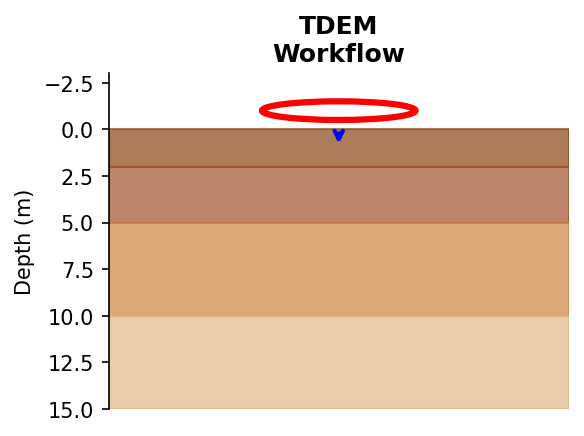
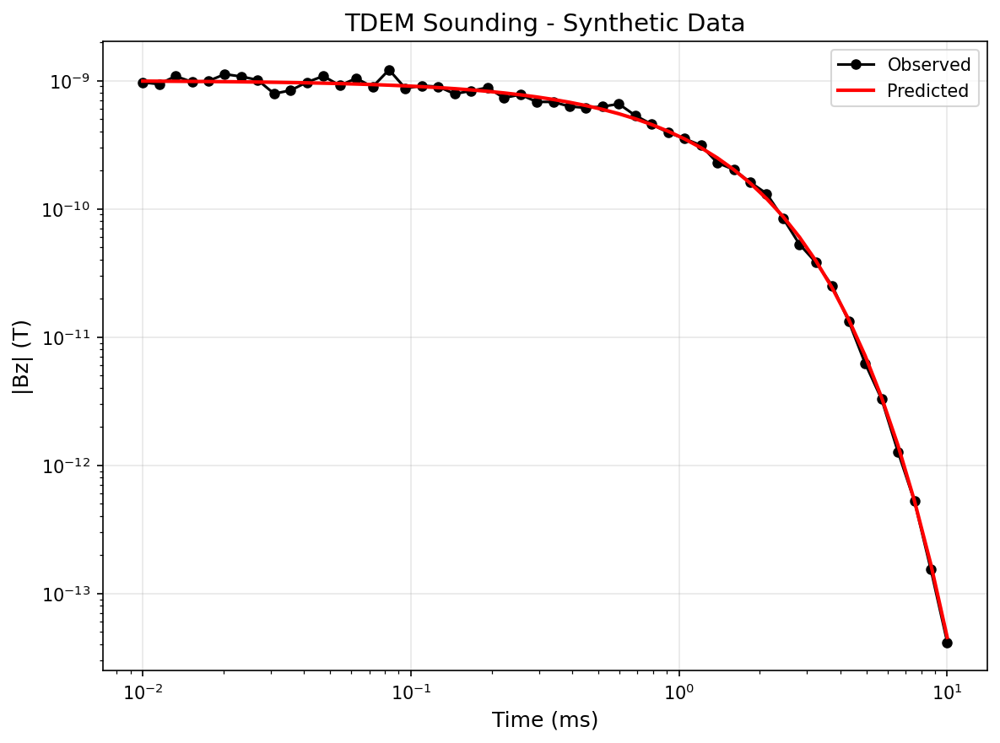
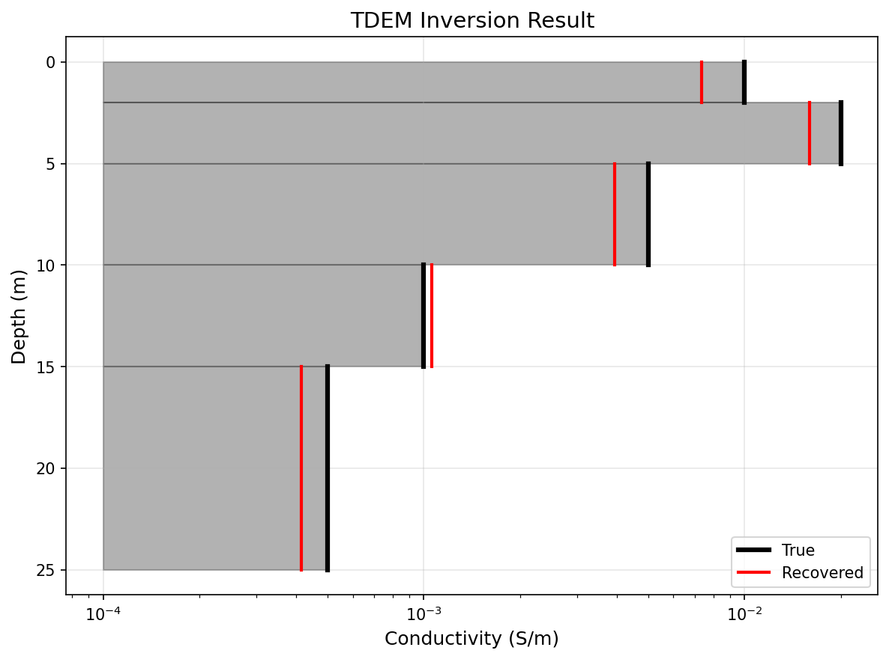
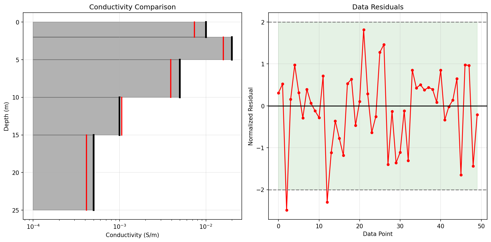
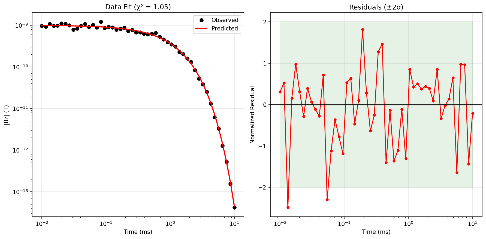

Note
Go to the end to download the full example code.
Ex. TDEM Workflow: From Hydrological Models to EM Responses and Inversion#
This example demonstrates the complete workflow for integrating hydrological model outputs (MODFLOW water content) with Time-Domain Electromagnetic (TDEM) forward modeling and inversion using SimPEG and PyHydroGeophysX.
The workflow includes: 1. Loading MODFLOW water content and porosity data 2. Extracting 1D profiles from 3D hydrological model 3. Converting water content to electrical conductivity using petrophysical models 4. Forward modeling TDEM responses using PyHydroGeophysX 5. Performing TDEM inversion to recover conductivity structure 6. Comparing recovered vs true models
## Step 1: Import Required Modules
import os
import sys
import numpy as np
import matplotlib.pyplot as plt
from simpeg.utils import plot_1d_layer_model
# Setup package path for development
try:
current_dir = os.path.dirname(os.path.abspath(__file__))
except NameError:
current_dir = os.getcwd()
parent_dir = os.path.dirname(current_dir)
if parent_dir not in sys.path:
sys.path.insert(0, parent_dir)
# Import PyHydroGeophysX modules
from PyHydroGeophysX.petrophysics.resistivity_models import WS_Model
from PyHydroGeophysX.forward.tdem_forward import TDEMForwardModeling, TDEMSurveyConfig, hydro_to_tdem
from PyHydroGeophysX.inversion.tdem_inversion import TDEMInversion, run_tdem_inversion
# Plotting settings
plt.rcParams.update({"font.size": 14, "lines.linewidth": 2, "lines.markersize": 8})
Create output directory
output_dir = os.path.join(current_dir, "results", "tdem_workflow")
os.makedirs(output_dir, exist_ok=True)
## Step 2: Load MODFLOW Water Content Data
Load the hydrological model outputs (water content and porosity) from MODFLOW simulation. We’ll extract a 1D vertical profile for TDEM sounding simulation.
Load domain and hydrological data
data_dir = os.path.join(current_dir, "data")
# Load domain information
idomain = np.loadtxt(os.path.join(data_dir, "id.txt"))
top = np.loadtxt(os.path.join(data_dir, "top.txt"))
bot = np.load(os.path.join(data_dir, "bot.npy"))
# Load porosity and water content from MODFLOW
porosity_3d = np.load(os.path.join(data_dir, "Porosity.npy"))
water_content_3d = np.load(os.path.join(data_dir, "Watercontent.npy"))
# Use time step 5 (same as ERT workflow example)
water_content = water_content_3d[5]
print(f"Porosity shape: {porosity_3d.shape}")
print(f"Water content shape: {water_content.shape}")
print(f"Number of layers: {len(bot) + 1}")
## Step 3: Extract 1D Vertical Profile
Extract a vertical profile at a specific location for TDEM sounding. We’ll use a location within the active domain.
Select a location for 1D TDEM sounding (column, row in the model grid)
col_idx, row_idx = 105, 120 # Example location within active domain
# Extract vertical profile of porosity and water content
porosity_profile = porosity_3d[:, row_idx, col_idx]
wc_profile = water_content[:, row_idx, col_idx]
# Calculate layer thicknesses from top and bottom elevations
layer_tops = np.zeros(len(bot) + 1)
layer_tops[0] = top[row_idx, col_idx]
for i, b in enumerate(bot):
layer_tops[i + 1] = b[row_idx, col_idx]
# Layer thicknesses: For N layers, we need N-1 thicknesses (last layer extends to infinity)
# np.diff gives N-1 values from N values, but we have N+1 layer_tops for N layers
# So we need to take only the first N-1 thicknesses
all_thicknesses = np.abs(np.diff(layer_tops))
layer_thicknesses = all_thicknesses[:-1] # N-1 thicknesses for N layers
# Calculate saturation
saturation_profile = wc_profile / porosity_profile
n_layers = len(porosity_profile)
print(f"Number of layers: {n_layers}")
print(f"Number of thicknesses (should be {n_layers-1}): {len(layer_thicknesses)}")
print(f"Layer thicknesses (m): {layer_thicknesses[:5]}... (first 5)")
print(f"Porosity range: {porosity_profile.min():.3f} - {porosity_profile.max():.3f}")
print(f"Saturation range: {saturation_profile.min():.3f} - {saturation_profile.max():.3f}")
## Step 4: Convert to Electrical Conductivity
Use the Waxman-Smits petrophysical model to convert hydrological properties (water content, porosity) to electrical conductivity.
Define petrophysical parameters These can vary by layer based on geology
n_layers = len(porosity_profile)
# Pore water conductivity (S/m) - typical groundwater
sigma_w = np.full(n_layers, 0.05) # ~20 Ohm-m water
# Cementation exponent - varies with rock type
# Higher values for tighter rock
m = np.ones(n_layers) * 1.5
m[4:] = 1.8 # Fractured bedrock below layer 4
# Saturation exponent
n = np.ones(n_layers) * 2.0
# Surface conductivity (clay contribution) - mainly in shallow layers
sigma_s = np.zeros(n_layers)
sigma_s[:4] = 0.01 # Surface conductivity in regolith
# Calculate resistivity using Waxman-Smits model
resistivity = np.zeros(n_layers)
for i in range(n_layers):
resistivity[i] = WS_Model(
saturation_profile[i],
porosity_profile[i],
sigma_w[i],
m[i],
n[i],
sigma_s[i]
)
# Convert to conductivity
conductivity = 1.0 / resistivity
print(f"Conductivity range: {conductivity.min():.4f} - {conductivity.max():.4f} S/m")
print(f"Resistivity range: {resistivity.min():.1f} - {resistivity.max():.1f} Ohm-m")
Visualize the true 1D conductivity model
fig, axes = plt.subplots(1, 4, figsize=(16, 6))
# Cumulative depth for plotting - add extra depth for last layer (extends to infinity)
# Use a reasonable plotting depth for the last layer
last_layer_thickness = 5.0 # Arbitrary thickness for plotting the last layer
depths = np.cumsum(np.r_[0, layer_thicknesses, last_layer_thickness])
# Number of layers to plot (all n_layers)
n_plot = n_layers
# Porosity profile
ax1 = axes[0]
for i in range(n_plot):
ax1.fill_betweenx([depths[i], depths[i+1]], 0, porosity_profile[i], alpha=0.7, color='steelblue')
ax1.set_xlabel('Porosity (-)')
ax1.set_ylabel('Depth (m)')
ax1.set_title('Porosity')
ax1.set_xlim(0, 0.5)
ax1.invert_yaxis()
ax1.grid(True, alpha=0.3)
# Water content profile
ax2 = axes[1]
for i in range(n_plot):
ax2.fill_betweenx([depths[i], depths[i+1]], 0, wc_profile[i], alpha=0.7, color='dodgerblue')
ax2.set_xlabel('Water Content (-)')
ax2.set_ylabel('Depth (m)')
ax2.set_title('Water Content')
ax2.set_xlim(0, 0.4)
ax2.invert_yaxis()
ax2.grid(True, alpha=0.3)
# Saturation profile
ax3 = axes[2]
for i in range(n_plot):
ax3.fill_betweenx([depths[i], depths[i+1]], 0, saturation_profile[i], alpha=0.7, color='cyan')
ax3.set_xlabel('Saturation (-)')
ax3.set_ylabel('Depth (m)')
ax3.set_title('Saturation')
ax3.set_xlim(0, 1.0)
ax3.invert_yaxis()
ax3.grid(True, alpha=0.3)
# Conductivity profile
ax4 = axes[3]
for i in range(n_plot):
ax4.fill_betweenx([depths[i], depths[i+1]], 1e-5, conductivity[i], alpha=0.7, color='red')
ax4.set_xlabel('Conductivity (S/m)')
ax4.set_ylabel('Depth (m)')
ax4.set_title('Conductivity')
ax4.set_xscale('log')
ax4.invert_yaxis()
ax4.grid(True, alpha=0.3)
plt.tight_layout()
plt.savefig(os.path.join(output_dir, "true_model_profiles.png"), dpi=150)
plt.show()
True Model Profiles#
Vertical profiles of porosity, water content, saturation, and conductivity extracted from the MODFLOW model. The conductivity is calculated using the Waxman-Smits petrophysical model with layer-specific parameters.
{kind=link}

## Step 5: TDEM Forward Modeling
Use PyHydroGeophysX’s TDEMForwardModeling class to compute the TDEM response for a circular loop source with step-off waveform.
Define TDEM survey configuration
times = np.logspace(-5, -2, 31) # 10 µs to 10 ms
survey_config = TDEMSurveyConfig(
source_location=np.array([0.0, 0.0, 0.0]),
source_radius=10.0, # 10 m loop radius
source_current=1.0,
receiver_location=np.array([0.0, 0.0, 0.0]),
receiver_orientation="z",
times=times,
waveform_type="step_off"
)
print(f"TDEM Survey Configuration:")
print(f" Loop radius: {survey_config.source_radius} m")
print(f" Time channels: {len(times)} points ({times[0]*1e6:.1f} µs to {times[-1]*1e3:.1f} ms)")
Create forward modeler
fwd = TDEMForwardModeling(
thicknesses=layer_thicknesses,
survey_config=survey_config
)
# Compute forward response with noise
noise_level = 0.05 # 5% noise
dobs, dpred_clean, uncertainties = fwd.forward_with_noise(
conductivity,
noise_level=noise_level,
seed=42
)
print(f"Forward modeling complete!")
print(f" Number of data points: {len(dobs)}")
print(f" Data range: {np.abs(dobs).min():.2e} to {np.abs(dobs).max():.2e} T")
## Step 6: Plot Synthetic TDEM Data
Plot observed data
fig, ax = plt.subplots(figsize=(8, 6))
ax.loglog(times * 1e3, np.abs(dpred_clean), 'b-', lw=2, label='Clean data')
ax.loglog(times * 1e3, np.abs(dobs), 'ko', markersize=6, label='Noisy data')
ax.fill_between(times * 1e3,
np.abs(dobs) - uncertainties,
np.abs(dobs) + uncertainties,
alpha=0.3, color='gray', label='Uncertainty')
ax.set_xlabel('Time (ms)')
ax.set_ylabel('|Bz| (T)')
ax.set_title('TDEM Sounding - Synthetic Data from MODFLOW')
ax.legend()
ax.grid(True, which='both', alpha=0.5)
plt.tight_layout()
plt.savefig(os.path.join(output_dir, "synthetic_tdem_data.png"), dpi=150)
plt.show()
Synthetic TDEM Data#
TDEM sounding data generated from the MODFLOW-derived conductivity model. The clean forward response (blue line), noisy observations (black circles), and uncertainty bounds (gray shading) are shown on log-log axes.
{kind=link}

## Step 7: Save Synthetic Data
Save data to file
data_file = os.path.join(output_dir, "tdem_synthetic_data.txt")
np.savetxt(data_file, np.c_[times, dobs, uncertainties],
fmt="%.6e", header="TIME(s) BZ(T) UNCERTAINTY(T)")
print(f"Data saved to: {data_file}")
## Step 8: Run TDEM Inversion
Use PyHydroGeophysX’s TDEMInversion class to recover the conductivity structure from the synthetic data.
Calculate max depth of true model to set appropriate inversion depth
true_max_depth = np.sum(layer_thicknesses)
print(f"True model max depth: {true_max_depth:.1f} m")
# Create TDEM inversion object with depth matching true model
tdem_inv = TDEMInversion(
times=times,
dobs=dobs,
uncertainties=uncertainties,
source_radius=10.0,
n_layers=20, # Number of layers for inversion mesh
min_thickness=0.5, # Thinner layers for better resolution
max_thickness=5.0, # Max thickness to keep total depth reasonable
starting_conductivity=0.001, # Closer to expected range
use_irls=True, # Use sparse regularization
max_iterations=50,
verbose=True
)
print("TDEM Inversion configured!")
Run the inversion
result = tdem_inv.run()
print(f"\nInversion Results:")
print(f" Final chi-squared: {result.chi2:.3f}")
print(f" Recovered conductivity range: {result.recovered_conductivity.min():.4f} - {result.recovered_conductivity.max():.4f} S/m")
## Step 9: Plot Results - Compare True and Recovered Models
Use the built-in plotting method
tdem_inv.plot_result(
result,
true_model=(layer_thicknesses, conductivity),
save_path=os.path.join(output_dir, "inversion_result.png")
)
TDEM Inversion Result#
Comparison of the true conductivity model with the recovered model from TDEM inversion. The inversion uses IRLS (Iteratively Reweighted Least Squares) regularization for sparse model recovery.
{kind=link}

## Step 10: Detailed Model Comparison
Detailed comparison plot
fig, axes = plt.subplots(1, 2, figsize=(14, 7))
# Model comparison (conductivity)
ax1 = axes[0]
# True model - step plot
for i in range(n_layers):
ax1.fill_betweenx([depths[i], depths[i+1]], 1e-5, conductivity[i],
alpha=0.3, color='black')
ax1.plot([conductivity[i], conductivity[i]], [depths[i], depths[i+1]],
'k-', lw=3, label='True' if i == 0 else '')
# L2 model
if result.l2_conductivity is not None:
inv_depths = np.cumsum(np.r_[0, result.thicknesses])
for i in range(len(result.l2_conductivity)):
if i < len(inv_depths) - 1:
ax1.plot([result.l2_conductivity[i], result.l2_conductivity[i]],
[inv_depths[i], inv_depths[i+1]], 'b-', lw=2,
label='L2 Model' if i == 0 else '')
# Sparse model
for i in range(len(result.recovered_conductivity)):
if i < len(inv_depths) - 1:
ax1.plot([result.recovered_conductivity[i], result.recovered_conductivity[i]],
[inv_depths[i], inv_depths[i+1]], 'r-', lw=2,
label='Sparse Model' if i == 0 else '')
ax1.set_xscale('log')
ax1.set_xlabel('Conductivity (S/m)')
ax1.set_ylabel('Depth (m)')
ax1.set_title('True vs Recovered Conductivity')
ax1.legend(loc='upper right')
ax1.grid(True, alpha=0.3)
ax1.invert_yaxis()
ax1.set_xlim(1e-4, 1)
# Resistivity comparison
ax2 = axes[1]
# True model
for i in range(n_layers):
ax2.fill_betweenx([depths[i], depths[i+1]], 1, resistivity[i],
alpha=0.3, color='black')
ax2.plot([resistivity[i], resistivity[i]], [depths[i], depths[i+1]],
'k-', lw=3, label='True' if i == 0 else '')
# Sparse model (resistivity)
rec_resistivity = 1.0 / result.recovered_conductivity
for i in range(len(rec_resistivity)):
if i < len(inv_depths) - 1:
ax2.plot([rec_resistivity[i], rec_resistivity[i]],
[inv_depths[i], inv_depths[i+1]], 'r-', lw=2,
label='Recovered' if i == 0 else '')
ax2.set_xscale('log')
ax2.set_xlabel('Resistivity (Ohm-m)')
ax2.set_ylabel('Depth (m)')
ax2.set_title('True vs Recovered Resistivity')
ax2.legend(loc='upper left')
ax2.grid(True, alpha=0.3)
ax2.invert_yaxis()
plt.tight_layout()
plt.savefig(os.path.join(output_dir, "model_comparison_detailed.png"), dpi=150)
plt.show()
Detailed Model Comparison#
Side-by-side comparison of conductivity (left) and resistivity (right) models. The true model (black), L2 regularized model (blue), and sparse IRLS model (red) are shown to compare different regularization approaches.
{kind=link}

Data fit comparison
fig, axes = plt.subplots(1, 2, figsize=(14, 6))
# Data comparison
ax1 = axes[0]
ax1.loglog(times * 1e3, np.abs(dobs), 'ko', markersize=8, label='Observed')
ax1.loglog(times * 1e3, np.abs(result.predicted_data), 'r-', lw=2, label='Predicted')
ax1.loglog(times * 1e3, np.abs(dpred_clean), 'b--', lw=1.5, alpha=0.7, label='True')
ax1.set_xlabel('Time (ms)')
ax1.set_ylabel('|Bz| (T)')
ax1.set_title(f'Data Fit (χ² = {result.chi2:.2f})')
ax1.legend()
ax1.grid(True, which='both', alpha=0.5)
# Residuals
ax2 = axes[1]
residual = (dobs - result.predicted_data) / uncertainties
ax2.semilogx(times * 1e3, residual, 'ro-', lw=1.5, markersize=5)
ax2.axhline(0, color='k', linestyle='-', lw=0.5)
ax2.axhline(2, color='gray', linestyle='--', lw=0.5)
ax2.axhline(-2, color='gray', linestyle='--', lw=0.5)
ax2.fill_between(times * 1e3, -2, 2, alpha=0.1, color='green')
ax2.set_xlabel('Time (ms)')
ax2.set_ylabel('Normalized Residual')
ax2.set_title('Data Residuals (±2σ shaded)')
ax2.grid(True, alpha=0.5)
plt.tight_layout()
plt.savefig(os.path.join(output_dir, "data_fit.png"), dpi=150)
plt.show()
Data Fit and Residuals#
Assessment of inversion quality: (left) comparison of observed, predicted, and true TDEM data showing the data fit; (right) normalized residuals with ±2σ bounds (green shading) indicating good fit when residuals fall within.
{kind=link}

## Step 11: Inversion Statistics
Print inversion statistics
print("=" * 50)
print("TDEM INVERSION SUMMARY")
print("=" * 50)
print(f"\nData Statistics:")
print(f" Number of data points: {len(dobs)}")
print(f" Time range: {times[0]*1e6:.1f} µs - {times[-1]*1e3:.1f} ms")
print(f"\nModel Statistics:")
print(f" Number of inversion layers: {len(result.recovered_conductivity)}")
print(f" True conductivity range: {conductivity.min():.4f} - {conductivity.max():.4f} S/m")
print(f" Recovered conductivity range: {result.recovered_conductivity.min():.4f} - {result.recovered_conductivity.max():.4f} S/m")
print(f"\nMisfit:")
print(f" Final chi-squared: {result.chi2:.3f}")
print(f" Target chi-squared: 1.0")
# Compute RMS error
rms = np.sqrt(np.mean((dobs - result.predicted_data)**2))
print(f" RMS data error: {rms:.2e} T")
print("=" * 50)
## Step 12: Save Results
Save inversion results
np.save(os.path.join(output_dir, "recovered_conductivity.npy"), result.recovered_conductivity)
np.save(os.path.join(output_dir, "recovered_model_log.npy"), result.recovered_model)
np.save(os.path.join(output_dir, "true_conductivity.npy"), conductivity)
np.save(os.path.join(output_dir, "true_layer_thicknesses.npy"), layer_thicknesses)
np.save(os.path.join(output_dir, "inv_thicknesses.npy"), result.thicknesses)
np.save(os.path.join(output_dir, "predicted_data.npy"), result.predicted_data)
print(f"Results saved to: {output_dir}")
## Summary
This workflow demonstrated the complete integration of hydrological and electromagnetic geophysics:
### Workflow Steps: 1. Load MODFLOW Data: Extracted water content and porosity from 3D hydrological model 2. Extract 1D Profile: Selected a vertical profile for TDEM sounding simulation 3. Petrophysical Conversion: Converted hydrological properties to electrical conductivity using Waxman-Smits model 4. TDEM Forward Modeling: Used TDEMForwardModeling class to compute synthetic electromagnetic responses 5. TDEM Inversion: Used TDEMInversion class to recover conductivity structure with sparse regularization
### Key PyHydroGeophysX Components Used: - TDEMForwardModeling: 1D layered Earth forward modeling with SimPEG - TDEMSurveyConfig: Configuration for TDEM survey geometry - TDEMInversion: 1D TDEM inversion with L2 and IRLS sparse regularization - WS_Model: Waxman-Smits petrophysical model for resistivity
### Observations: - The sparse inversion recovers blocky conductivity structures - TDEM is sensitive to conductive zones in the subsurface - The recovered model matches the general conductivity trends of the true model - Chi-squared ≈ 1 indicates good data fit
### Next Steps: - Apply to multiple time steps for time-lapse TDEM monitoring - Compare with ERT results for joint interpretation - Extend to multiple soundings for pseudo-2D imaging